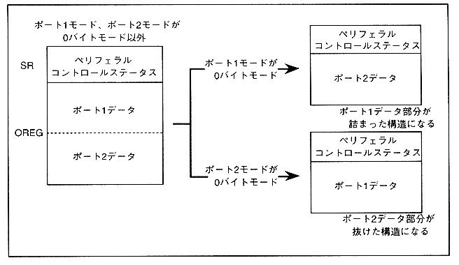

If either port is set to 0-byte mode, the data of the port set to 0-byte mode is missing and packed.
Figure 3.11 shows the data structure when one is in 0 byte mode.
Figure 3.11 Result parameter configuration when one is in 0 byte mode

As described above, the structure of the result parameter differs depending on the command parameter setting conditions. Table 3.4 shows the relationship between the command parameter setting conditions and the generated result parameter configuration.